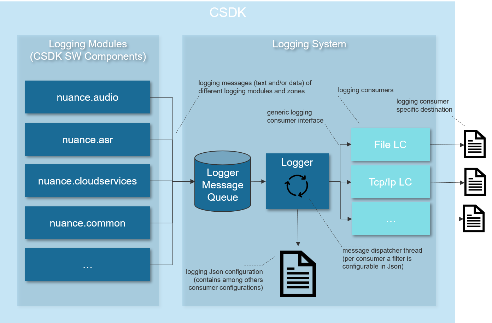

Non-functional aspects to consider when using Cerence ASR
Manager components
Many aspects of Cerence ASR are governed by so-called “manager” components. When they are created, they receive a configuration component. They will then prepare all components necessary to realize the configuration specification, and possibly also do other operations needed at initialization time.
Manager components are singleton components; there is expected to be at most one instance of each manager component. These are the manager components in use in Cerence ASR today. See also the C API section for an illustration of the C initialization sequence:
ISystemManager
The system manager is responsible for setting up and managing common components in the system. This includes logging, threading and timing components. It should be the first component that is created when setting up a recognition system, after loading the configuration. The signature is as follows; all arguments are mandatory:
nuance_common_ResultCode nuance_common_ISystemManager_create( const LH_CHAR *name, const nuance_common_IConfiguration *config, nuance_common_ISystemManager **systemManager )
API reference: ISystemManager
ICloudManager
The cloud manager is only required in systems that use remote recognition. It handles the configuration of components that are used for sending NCS cloud commands, such as CloudServices components, connection info, etc. The cloud manager requires a valid system manager, and the configuration data:
nuance_common_ResultCode nuance_cloudservices_ICloudManager_create( const LH_CHAR *name, nuance_common_ISystemManager *systemManager, const nuance_common_IConfiguration *config, nuance_cloudservices_ICloudManager **cloudManager )
API reference: ICloudManager
IAudioManager
The audio manager handles creation of all components involved in audio chains (audio input, codecs, audio buffering, SSE,…) It will create all the audio paths as defined in the JSON configuration (typically
audioconfig.json).Creating the audio manager requires a valid system manager, and the audio configuration. Optionally you can also use an audio manager listener to get notified of audio events. The signature of the audio manager creation function is this one:
nuance_common_ResultCode nuance_audio_IAudioManager_create( const LH_CHAR *name, nuance_common_ISystemManager *systemManager, const nuance_common_IConfiguration *config, nuance_audio_IAudioManagerListener *listener, nuance_audio_IAudioManager **audioManager)
If no audio manager listener is required, you can use NULL as the argument value:
resultCode = nuance_audio_IAudioManager_create(<name>, systemMgr, audioConfiguration, NULL, &audioMgr);
See section Audio setup and configuration for more details on audio components and audio configuration.
API reference: IAudioManager
IAsrManager
This manager is responsible for creating the components that relate directly to speech recognition. The most important ones are ASR applications (
IApplication), recognizers (IRecognizer) and dynamic content consumers (DCC,IDynamicContentConsumer).The ASR manager creation function has the following signature:
nuance_common_ResultCode nuance_asr5_IAsrManager_create( const LH_CHAR *name, const nuance_common_IConfiguration *config, nuance_cloudservices_ICloudManager *cloudManager, nuance_audio_IAudioManager *audioManager, nuance_asr5_IAsrManagerListener *listener, nuance_asr5_IAsrManager **theInstance )
(API reference: IAsrManager )
It requires a name, a configuration component and an audio manager at the minimum. The listener argument may be NULL if the system is not interested in event notifications from the ASR manager, and if no cloud recognition is done, the cloud manager parameter (
cloudManager) may be NULL:returnCode = nuance_asr5_IAsrManager_create("<name>", *asrConfiguration, NULL, audioMgr, NULL, &asrMgr);
This manager also coordinates the recognition process, using the function
nuance_asr5_IAsrManager_setApplications(and variants), which controls the setup of the search space for the active recognizer(s). (See Applications.)
Logging
The sections below provide an overview of the most commonly used features of the logging system.
For full logger documentation, please refer to the logging section of the NDS_Common user guide: logging_intro.html
Logging mechanism
This figure shows the architecture of the CSDK logging system:
{kind=link}
The logging system runs in a separate thread from the rest of the system. Modules in the system send their log messages to a message queue. The logging system then processes the messages one by one from this queue, and sends them on to their final destinations. A destination is a so-called “log consumer”, which will send a message to a specific log stream.
Log streams can be streams like stdout or stderr, or
disk-based files. There can be as many log streams as you want in your
system, and each can be configured to only receive a subset of all log
messages, based on the following criteria:
- Every message that is logged, is tagged with a specific prefix that indicates the place where the message originated. This prefix is called the “module”. A log consumer can log messages from one of more different modules.
- Every message this is logged, is also tagged with a log “zone”. Zones correspond to some extent with “log levels” in other logging frameworks. An important distinction is, though, that “zones” are not hierarchically ordered, but can be combined as desired for a log consumer. It is, for example, possible for a consumer to log all errors, and all debug messages.
The possibility to configure each log consumer for any combination of modules, and for any combination of log zones, provides for a very flexible logging mechanism.
Logger configuration
The logger is configured in a JSON file, typically called
logging.json. It is part of the Common services, so the file
should include the version number of the common services:
"version" : "Common 1.0",
All the logger configuration resides under the key logger:
"logger" : {
"text_buffer_entries" : 1000000,
"consumers": [{
...
}]
}
The value of the text_buffer_entries key specifies how large the
log buffer can be. The log buffer collects log messages before they
are handled by logging system itself. Having a buffer that is too
small may result in “buffer overrun” messages in the log (Log data
buffer overrun! Module: ...). When this happens, no more log
messages are recorded until there is space again in the log buffer.
The key consumers groups all of the configured
log consumers, which will filter and output the log messages to their
configured destinations.
Here is an example of a logging configuration file:
{
"version" : "Common 1.0",
"logger" : {
"text_buffer_entries" : 1000000,
"consumers" : [{
"name" : "stdout Logger",
"output" : "stdout",
"modules" : "",
"not_modules" : "",
"zones" : "LOG_FATAL|LOG_ERROR|LOG_WARNING|LOG_CORE_INFO|LOG_EXTERNAL_FUNC",
},{
"name" : "error to file",
"output" : "./ErrorsAndWarnings.log",
"modules" : "",
"not_modules" : "",
"zones" : "LOG_ERROR|LOG_FATAL|LOG_WARNING"
}]
}
}
In this example, two log consumers are defined: one that logs fatal, error, etc messages to the screen, and one that only logs fatal errors, errors, and warnings to a file.
Zones
The set of required zones for a log consumer is specified in a string, where the different zones are separated using a pipe symbol (“|”).
These are the zones that can be used in the configuration:
| Zone | Description |
|---|---|
| LOG_FATAL | All events that are a show stopper for the running application |
| LOG_ERROR | All events that are error conditions but recoverable |
| LOG_WARNING | Information that is useful to check the correct functionality |
| LOG_PERFORMANCE_WARNING | Information that the system performance is worse than expected |
| LOG_CORE_INFO | Special core information, e.g. threads started/stopped, used files and versions. This log zone has a low message volume. |
| LOG_INFO | More information that is useful to check the correct functionality |
| LOG_EXTERNAL_FUNC | Trace entry and exit of external functions |
| LOG_EXTERNAL_PARAM | Trace parameters of external functions |
| LOG_INTERNAL_FUNC | Trace entry and exit of internal functions |
| LOG_INTERNAL_PARAM | Trace parameters of internal functions |
| LOG_ALL_TEXT | LOG_FATAL|LOG_ERROR|LOG_WARNING|LOG_PERFORMANCE_WARNING|LOG_CORE_INFO|LOG_INFO| LOG_EXTERNAL_FUNC|LOG_EXTERNAL_PARAM|LOG_INTERNAL_FUNC|LOG_INTERNAL_PARAM |
| LOG_DATA | Trace binary data of the configured modules |
| LOG_TIMING_ANALYSIS | Log timing of audio chunks for detailed offline analysis. |
Apart from the “usual” levels fatal, error, info, and warning, there are a set of other possible zones, for example to tag warnings that only apply when performance is suffering, core messages, function parameters, and binary data.
Modules
The modules key is used to specify a set of application
modules. Log messages from these modules will be handled by this
consumer. Conversely, the not_modules allows to specify specific
modules from which log messages should not be handled. Again, the
modules and not_modules strings are given as a “|”-separated string.
These are the modules that exist in the system:
| Module | Description |
|---|---|
| nuance.audio | Activates log messages for all audio modules |
| nuance.asr5 | Activates log messages for the ASR component |
| nuance.cloudservices | Activates log messages for the cloud services component |
| nuance.common | Activates log messages for the common component |
| nuance.pal | Activates log messages for all PAL modules |
| nuance.prompter | Activates log messages for the prompter component |
| “” | empty string value activates log messages for all components |
Note that module naming for logging is hierarchical. The above prefixes distinguish the main modules in the CSDK.
It is possible to use more specialized module names to limit the range of log messages. As a rule, modules use as their logging keys the prefix followed by their class names:
nuance.asr5.IApplication
nuance.asr5.IRecognizer
...
This makes it possible to log messages from specific component classes. In fact, this mechanism carries over to configuration item names as well. You can qualify a module name with a class name, and also a configured name, using a kind of “dot-notation”:
<module_prefix>.<component_name>.<configured_name>
Example:
nuance.cloudservices.CloudCommander.rec_csHttp
The following snippet will log messages that originate in the
CloudCommander class instance that has the name rec_csHttp, but
not in any other CloudCommander class instances:
{
"name" : "CS message log",
"output" : "./cloudservices-log.txt",
"modules" : "nuance.cloudservices.CloudCommander.rec_csHttp",
"not_modules" : "",
"zones" : "LOG_ALL_TEXT"
}
Note, though, that not_modules has precedence: if
nuance.cloudservices.CloudCommander is in not_modules, then
all messages from any CloudCommander will be suppressed, even if
specific instances are listed in modules. This example will still
suppress all CloudCommander messages, despite having rec_csHttp
listed in the modules string:
{
"name" : "CS message log",
"output" : "./cloudservices-log.txt",
"modules" : "nuance.cloudservices|nuance.cloudservices.CloudCommander.rec_csHttp",
"not_modules" : "nuance.cloudservices.CloudCommander",
"zones" : "LOG_ALL_TEXT"
}
Audio logging
It is possible to use the logging system to log audio data, in addition to textual log messages. Most components that handle audio have specific hooks from which audio can be logged. These hooks are called “pads” in the Audio SDK. Please refer to the Audio SDK user’s guide for full information.
There are two types of pads in audio components: sinks (for incoming audio) and sources (for outgoing audio). An AudioOutput component (e.g. toward a speaker) will have only a sink-pad. An AudioInput component (from a file or microphone) will only have a source-pad. And a component such as SSE will have both a sink-pad and a source-pad. To log the audio that a recognizer gets, we connect a log consumer to its sink-pad.
The nuance.audio.SinkPad logs its audio data in the
LOG_DATA zone (for binary data), as 16-bit PCM data. In order to
log audio from a specific recognizer, we use the dot-notation for
specifying the recognizer:
nuance.audio.SinkPad.<component_name>.<pad_name>
If a component only has one pad name, then it can be omitted. For example, for a recognizer, there is only a pad for logging the incoming audio, so the correct syntax is:
nuance.audio.SinkPad.rec
A fully configured audio log consumer for a recognizer looks like this:
{
"name" : "AudioLoggingWuwConsumer",
"output" : "./tmp_cache/AudioLogging_%DATE_TIME%.pcm",
"max_file_size": -1,
"max_files_number": 1,
"enable_backup_log": true,
"modules" : "nuance.audio.SinkPad.rec",
"not_modules" : "",
"zones" : "LOG_DATA"
}
The output file name in this example contains a %DATE_TIME% time
placeholder. This placeholder will be replaced when the logger starts
logging a new stream of audio. If the file name does not contain this
placeholder, it will be overwritten each time a new audio stream
starts. If it does contain the placeholder, a new file will be
created for each stream (because the name will be unique due to
timestamp).
These are the placeholders that you can use in the name of the logger output file:
%DATE_TIME%- this placeholder is replaced by a time stamp that contains the current date and time. The format used is this: YYYY-MM-DD_HH-MM-SS. This is the file creation time, and it is accurate to within 1 second.%TIME_MS%- this placeholder is replaced by a time stamp that contains the current time since the process started (format: HH-MM-SS-MS). This is the time stamp of the first entry written into the file, and it is accurate to one microsecond.
It is also possible to log audio for specific ASR applications,
instead of all audio for the recognizer. The logged audio ranges from
the time when recognition starts (which is determined by
startTimeMs parameter in the <IAsrManager>.setApplication
interface), to the time when recognition ends, which happens if
trailing silence is detected, when the time in the endTimeMs
parameter in <IAsrManager>.setApplication is reached, or when
audio input is stopped.
Note: the “trailing silence” used for determining the end of audio
logging is not the same trailing silence that is set on the search
context using an ASR parameter. The trailing silence referred to here
is set in the JSON configuration for the recognizer, using the
"trailing_silence_threshold" key:
{
"version": "VoConHigh 5.0",
"recognizer": [{
"name": "rec",
"asr_engine": {
"...": "..."
},
"trailing_silence_threshold": "..."
}]
}
Similarly to the example above, we also use the dot-notation for specifying the application:
nuance.asr5.AudioLoggingSourceWrapper.<recognizer_name>.<application_name>
An example JSON configuration is almost the same as the example above, just using a different module specification:
{
"name" : "AudioLoggingWuwConsumer",
"output" : "./tmp_cache/AudioLogging_APP_WUW_%DATE_TIME%.pcm",
"max_file_size": -1,
"max_files_number": 1,
"enable_backup_log": true,
"modules" : "nuance.asr5.AudioLoggingSourceWrapper.testRecognizer.APP_WUW",
"not_modules" : "",
"zones" : "LOG_DATA"
}
In order to faithfully log audio, it is important to make sure that a
buffer of sufficient size is allocated to buffer to samples. This is
done using the key data_buffer_size_per_channel in the logger
configuration block:
{
"version" : "Common 1.0",
"logger" : {
"..." : "...",
"data_buffer_size_per_channel" : 500000,
"..." : "..."
}
}
Cloud logging
It is also possible to log messages to the cloud server. The messages will then be stored on the server, where they can be retrieved from the database. Note that logging to the cloud happens outside of the logging system, but uses the CloudServices mechanisms.
The goal of logging client data to the server, is to make it possible to improve the remote server’s language model. Models can be periodically retrained, and having metadata from the client to augment data passed to the server with the original ASR request, helps to expand the set of data available for model retraining.
There are two ways to log information to the cloud server. The first way is to send the information as part of a recognition command. The second way is to send a separate logging command.
Sending log info as part of a recognition command is done by including
a LOG_CONTENT sub-dictionary of the REQUEST_INFO in the
remote recognition query:
{
"REQUEST_INFO": {
"json": {
"start": 0,
"end": 0,
"text": "",
"appserver_data": {
"...": "..."
},
"LOG_CONTENT": {
"...": "..."
}
}
}
The JSON dictionary that is the value of LOG_CONTENT is then
stored on the server, where it can be retrieved from the logs.
Sending a separate log command can be done by configuring an ASR application that uses a log command in its query. For example:
{
"version": "VoConHigh 5.0",
"application": {
"name": "APP_CLOUD_LOGGING",
"type": "cloud",
"cloud": {
"cloud_services_name" : "csHttp",
"query": {
"name": "CLOUD_LOG",
"command": "NVC_LOG_REVISION_CMD",
"connection_info": {
"uses": "TEST_CONNINFO"
},
"param": {
"type": "LOG_CONTENT",
"LOG_CONTENT": {
"json": {
"...": "..."
}
}
}
}
}
}
}
When this application is activated on a recognizer, the query command will be executed, and the log message will be sent to the server.
It is possible to group several ASR recognitions and log events. This
is done by including a application_session_id key in the log
content JSON dictionary. The value should be a client-generated
GUID. Using the same GUID for the session ID in subsequent
recognitions or log revision events tells the server that they belong
to the same recognition session.
It is also possible to send audio data as part of a LOG_REVISION command. For details, refer to the CloudServices SDK manual.
Threads
Cerence ASR makes use of threads to run operations in parallel. There are a number of threads for speech recognition, and also a set of threads that do other tasks. For example, the logging system runs in a separate thread.
ASR threads
By default, when Cerence ASR is initialized, the following threads are created:
- ASR5_Worker0
- ASR5_Worker1
- ASR5_Worker2
- ASR5_Worker3
- ASR5_Dispatcher
- ASR5_FatalListener
The number of worker threads that are created is defined in the
configuration file liquid_config.json. It is possible to change
the number of workers, but it is generally advised to leave the
default configuration in place.
Background operations
Some make use of threads to run background operations
IAsrManager:
The call to
nuance_asr5_IAsrManager_createuses two worker threads to delay loading of specific configuration parts in the background. The threads are calledASR5_CFGandASR5_CLOUD. They load application configurations, and set up delayed-load searches for the recognizer whennuance_asr5_IAsrManager_setApplicationsis called in the background.IDynamicContentConsumer:
Performs the grapheme-to-phoneme (G2P) conversion process, for dynamically-loaded vocabulary items, in the background.
ICloudCommander:
uses a background thread to send cloud commands to NCS, and to receive the response.
These background tasks are implemented using the IBackgroundOperation interface, which can be used to control the behavior of the background operations. The IBackgroundOperation interface has operations to query the status of the operation (running, aborted, failed,…), to wait for task completion (with or without timeout), etc.
(API reference: IBackgroundOperation)
Thread pools & priorities
Dynamic content consumers make use of two thread pools to schedule background operations:
- The DCC creation pool (called
dcc_creation)- The DCC data preparation pools (called
dcc_data_preparation)
The system can control how many threads each pool should contain, and can also specify the priority (low or normal) of the threads in the data preparation pool. The JSON configuration for these thread pools is part of the recognizer’s configuration:
"recognizer": [{
...,
"thread_pool": {
"dcc_creation": {
"max_number": <maximum number of threads>,
"name": "DCC_CREATION"
},
"dcc_data_preparation": {
"low_priority": {
"max_number": <maximum number of threads>,
"name": "DCC_LOW"
},
"normal_priority": {
"max_number": <maximum number of threads>,
"name": "DCC_NORMAL"
}
}
}
}]
Note the existence of a low-priority pool and a normal-priority pool
in the dcc_data_preparation category. If, for a specific dynamic
content consumer, the priority is not explicitly configured, it will
automatically receive normal priority.
For DCC creation, all threads in the pool have the same priority (NORMAL).
When a DCC is created or when data preparation is started on a DCC, Cerence ASR will grab an available thread from the corresponding pool and assign it to the task at hand. By default the size of the thread pools is 1. This means that at any point in time there will only be one active DCC thread for creation and maximum two (low and normal priority) DCC threads for data preparation. In other words, DCC tasks of the same priority will be executed sequentially.
In the DCC JSON configuration file, the application can specify the priority of its thread:
"dynamic_content_consumer": [{
...,
"thread_priority": "(LOW|NORMAL)"
}]
Note that all these properties are optional. If not set, the default
values will be used (1 for max_number and NORMAL for
thread_priority).
Configuration concepts
JSON files
Cerence ASR configuration uses the concept of a configuration directory. All JSON configuration files are grouped in a directory. Exactly what each file contains is fairly flexible.
Each file must have a version tag, that specifies the target
system for the configuration in that file:
{
"version" : "AudioMgr 1.0",
"..." : "..."
}
Configuration items for different subsystems cannot be in the same file, but it is perfectly OK to split configuration items for a subsystem into several files. This makes it possible to make logical splits in the configuration to group specific items.
Typically, configuration is grouped per functional block,
corresponding to one or a few top-level JSON keys, such as
applications. For example all ASR applications are combined in
a file (applications.json), all DCCs are in a file (dcc.json),
etc.
These are the configuration items that cannot be combined in the same file:
audio subsystem configuration
Files containing audio configuration must have
"version" : "AudioMgr 1.0",common configuration
This is typically the logging configuration. Files for common configuration must have
"version" : "Common 1.0",ASR configuration
This is the configuration of the recognition engine, including applications, recognizer setup, etc. Files for the ASR configuration must have
"version": "VoConHigh 5.0",
Syntax errors in JSON configuration files will be pointed out in the log:
00:00.031 ERROR: [4116] nuance.common.JsonCheck config/audioconfig.json (line 9, col 6): comma ',' expected or end of object '}'
Semantic errors can be trickier to diagnose. Because they don’t cause parsing errors, they often don’t cause the system to stop on startup, such that these errors may only be diagnosed by checking the logs:
00:00.531 WARNING: [10596] nuance.asr5.AsrManager Toplevel configuration for component 'VoConHigh', object type 'application', name 'WUW' not found! [491]
One way to detect such errors would be to have a log consumer that specifically logs warnings and error messages to a separate fie, and regularly scan this file for issues:
{
"version" : "Common 1.0",
"logger" : {
"...": "...",
"consumers" : [
{
"name" : "WarningErrorFatalLogConsumer",
"modules" : "",
"not_modules" : "",
"zones" : "LOG_WARNING|LOG_ERROR|LOG_FATAL"
}
]
}
}
Comments
By design, JSON does not allow comments in JSON files. This makes it uncomfortable to experiment with different configuration settings, and to rapidly switch between them.
The JSON parser used in the CSDK mitigates this somewhat, by allowing keys to be commented out. The values for commented keys are ignored when the JSON is read and parsed. The way to comment a key, is to prefix it with a hash mark (“#”). So, for example, the following key will not be taken into account when the JSON is read:
{
"#applications": "...",
"...": "..."
}
This makes it easy to experiment with several different values for the same key, without having to remove them wholesale from the configuration file in which they appear.
This extension also provides a way to enter comments: by using a commented, unused key, the key/value pair will be ignored by the parser:
{
"#comment": "Here we can enter a one-line comment.",
"...": "..."
}
The json key
In some places in the configuration, a special JSON key json is
used. This key is used in places where the JSON content should be used
literally. This means that the value of the json key is used as-is
by the code, instead of using individual values out of the JSON
dictionary.
An example is the connection info that is included with many cloud commands:
{
"connection_info": {
"json" : {
"dictation_type" : "automotive-dictation",
"dictation_language" : "eng-USA"
}
}
}
The json key here indicates that the request will include the JSON
dictionary as is; the dictionary
{
"dictation_type" : "automotive-dictation",
"dictation_language" : "eng-USA"
}
will be included in the HTTPS request:
{"dictation_type":"automotive-dictation","dictation_language":"eng-USA"}
Named JSON sections
Some parts of the JSON configuration may appear in several places
throughout the configuration files. An example is the
connection_info block which is required in most Cloud Services
commands: recognition commands, but also data upload commands, etc.
In order to avoid repetition of these blocks, they can be given a name. For example, the contents of a connection info block can be extracted as follows and given a name:
{
"connection_info": {
"name": "TEST_CONNINFO",
"json": {
"dictation_type" : "automotive-dictation",
"dictation_language" : "eng-USA"
}
}
}
It is then referenced as follows in the JSON configuration as follows,
using the uses key:
{
"connection_info": {
"uses": "TEST_CONNINFO"
}
}
instead of repeating the literal block each time:
{
"connection_info": {
"name": "TEST_CONNINFO",
"json": {
"dictation_type" : "automotive-dictation",
"dictation_language" : "eng-USA"
}
}
}
For the full configuration JSON overview, see Cerence ASR JSON configuration reference.
Minimal configuration
A minimal set of configuration consists of the following files. The file name can be chosen
freely, they just have to end on .json to be loaded by Cerence ASR:
asr_manager.json
This is the top level configuration file that defines internal
configurations of AsrManager in Cerence ASR.
The internal configurations are defined inside liquid config file. This includes threading for example:
{
"version" : "VoConHigh 5.0",
"asr_manager" : [{
"name" : "asrRecognizer",
"liquid_config_file_name" : "liquid_config.json"
}]
}
asr_paths.json
This is the top level configuration file that defines where Cerence ASR can find the data it needs. That is, it specifies the path names of data folders. Path names given here are relative to the configuration folder. The file has the following contents:
{
"version" : "VoConHigh 5.0",
"asr_paths" : {
"acmod" : "./acmod",
"search" : "./ctx"
}
}
audioconfig.json
The audio configuration file defines the audio paths used in Cerence ASR. A minimal version that configures audio for simple recognition from microphone has the following contents:
{
"version" : "AudioMgr 1.0",
"audio_scenario" : [{
"name" : "mic_input",
"audiopaths" : [[
"mic_input", "asr"
]]
}],
"module_config" : [{
"type" : "DefaultAudioInput",
"name" : "mic_input",
"audio_format" : {
"uses" : "16khz_1ch"
}
}],
"audio_format" : [{
"name" : "16khz_1ch",
"sample_rate" : 16000,
"samples_per_channel" : 512,
"channel_count" : 1
}]
}
For a complete overview of possible configuration options in this file, refer to
the DDFW_AudioManagement_Guide.html.
application.json
The application configuration file defines a simple ASR/NLU configuration for a given ASR/NLU task that can be executed. A simple version has the following contents:
{
"version" : "VoConHigh 5.0",
"application" : [{
"name" : "APP_CNC",
"input": [{
"type" : "asr",
"asr" : {
"search" : [{
"name" : "CNC_CTX",
"type" : "static",
"static" : {
"file_name" : "modelm_small.fcf"
},
"vocon_parameters": {
"LH_SEARCH_PARAM_TSILENCE": 150
}
}]
}
}]
}]
}
For a complete overview of possible configuration options in this file, refer to the Application Configuration Options documentation.
These files need to be placed in a common folder, for this example, let us
assume they have been put in /home/VoCon/sample_data. Moreover, the data
files (acoustic model and search) need to be placed in
/home/VoCon/sample_data/acmod and /home/VoCon/sample_data/search
respectively, since this is what we specified in asr_paths.json. The search
used in the above example is modelm_small.fcf (see the filename field in
application.json). The acoustic model that is used depends on the search,
since the search has a dependency to this model compiled into its data. In this
case, the acoustic model used is acmod6_6000_enu_gen_car_f16_v1_0_1.dat.
Typical configuration
The overall configuration structure, in the CSDK sample, looks like this:
sample
└──data
└──asr
├──config
│ ├──asr_paths.json
│ ├──audio_config.json
│ ├──logger.json
│ ├──asr_manager.json
│ ├──recognizer.json
│ ├──applications.json
│ ├──dcc.json
│ ├──lexicon.json
│ ├──sem3_filters.json
│ └──wuw_app.json
└──data
├──acmod
│ └──acmod6_6000_enu_gen_car_f16_v1_0_1.dat
├──asr
│ └──vocon_asr2.dat
├──ctx
│ └──*.fcf
├──liquid
│ └──liquid_config.json
├──pron
│ └──clc
│ └──clc_enu_mpthreevadml_v6_0_1.dat
├──sem3
│ └──music_simple_v5.s3c
└──sound
└──enu_f16
└──*.wav
There are two blocks in this directory structure:
- the directory
sample/asr/configcontains all JSON configuration files - the directory
sample/asr/datacontains all data that is needed by Cerence ASR to create a functional recognizer based on the JSON configuration.
The link between these two blocks is the asr_paths top-level JSON
key. In this example, this is located in the asr_paths.json file:
{
"version": "VoConHigh 5.0",
"asr_paths": {
"asr": "../data/asr",
"sem3": "../data/sem3",
"liquid": "../data/liquid",
"acmod": "../data/acmod",
"clc": "../data/pron/clc",
"search": [
"../data/ctx"
],
"search_cache": "./tmp_cache"
}
}
The asr_paths key defines, for all components of the recognizer,
which is the base path were external data files are located. As an
example, consider the acoustic model. In the file recognizer.json,
the recognizer rec is defined as follows, with the acoustic model
begin the file acmod6_6000_enu_gen_car_f16_v1_0_1.dat:
{
"name": "rec",
"asr_engine": {
"language": [{
"acmod": {
"file_name": "acmod6_6000_enu_gen_car_f16_v1_0_1.dat"
}
}]
}
}
The asr_paths state that the ACMOD data directory is
../data/acmod; this path is interpreted relative to the
configuration directory where the JSON files are located. When the
recognizer is created, its acoustic model will then be loaded from the
combined path
../data/acmod/acmod6_6000_enu_gen_car_f16_v1_0_1.dat.
The different path prefixes in asr_paths are:
asr- this is the static ASR data, typicallyvocon_asr2.datsem3- this contains the SEM3 buffers; typically files with the.s3csuffixliquid- this contains the ASR internal configuration; typically this is a file calledliquid_config.jsonclc- this contains all CLC bufferssearch- this contains all context files (.fcf) and language models (typically using.datsuffix). Note that this is an array; it is possible to specify more than one path for context and language model files.
Testing your configuration
You can easily test many aspects of your system’s JSON configuration
using the recog_test tool included in the Cerence ASR SDK.
In order to use recog_test, you create a specific JSON
configuration file, which tells recog_test where your ASR JSON
configuration is located, and how it should set up itself:
the audio path to use.
The audio paths are usually configured in
audio_config.json. The audio path forrecog_testwill probably be different from your system’s default audio path. For example, your system will use a microphone setup on the target platform, whereasrecog_testmay use pre-recorded audio snippets from a directory. Thewhich dynamic content to prepare, and where to fetch the data.
The
data_preparationsection lists the DCCs to create and prepare, and which data they should load.which ASR applications to include in the recognition.
This lists the activations, and whether to activate them from the start or not. Using conditions, it is possible to specify for example that an ASR application should be activated in response to a specific result type, etc. Using this mechanism it is possible to simulate, to a certain extent, a dialog where several ASR applications participate, such as switching from wake-up word recognition to command recognition.
Please refer to recog_test configuration file for more details on
creating the recog_test configuration.
Dynamic configuration at runtime
vh_callback
JSON configuration is static: the keys and values are specified in
files. This is not always convenient; some items, for example
credentials for connecting to a cloud server, should be configured at
runtime. The mechanism to do this, is using vh_callback
specifications.
When a configuration component is created, one of the arguments passed
to it is an IApplicationCallback:
nuance_common_IConfiguration_create(const LH_CHAR *configDir, nuance_common_IApplicationCallback *appCb, nuance_common_IConfiguration **config)
In the JSON configuration file, instead of specifying a key’s value
directly, you specify an identifier that will tip off Cerence ASR that a
value is not a literal value. This identifier is vh_callback. When
the configuration loader encounters this value, rather than use the
value directly, it will call the application callback provided in the
call to nuance_common_IConfiguration_create, and that in turn will
provide the actual value to use. Additionally, it is possible to
specify a default value in the JSON file, so if an actual value can’t
be found by the callback, it can return the default value.
Note that the callback will be called each time the key is requested from the configuration component. So if, during run-time, this value is requested 10 times, then the callback will be called 10 times. The callback is free to return a different value each time.
So, in the JSON configuration files, a literal value:
"<key>" : "<value>"
can be replaced by a callback reference:
"<key>" : {
"vh_callback" : {
"name" : "<name passed to application>",
"type" : "<string|array|integer|boolean|json>",
"default" : "<default value>"
}
}
This is an example:
{
"version" : "VoConHigh 5.0",
"connection_info" : {
"name" : "TEST_CONNINFO",
"json" : {
"application_version" : "5.0",
...
"application_session_id" : {
"vh_callback" : {
"name" : "appl_sess_id",
"type" : "string",
"default" : "afb7bf7gw2g7seg5nw0up2z"
}
},
...
"application_state_id" : "45"
}
}
}
The vh_callback declaration for application_session_id tells
Cerence ASR that when it calls the callback, it will receive a string.
Note that this example combines two concepts: dynamic value lookup,
and literal JSON blocks. This works as
you would expect: the value is looked up dynamically, and the JSON
block is then used as a literal value for the key connection_info.
Callback implementation
The application callback responsible for providing dynamic
configuration values is passed to the create function for
IConfiguration:
nuance_common_IConfiguration_create(const LH_CHAR *configDir,
nuance_common_IApplicationCallback *appCb,
nuance_common_IConfiguration **config)
The following is a simple implementation of an
IApplicationCallback function. When the function is called, the
key name from the JSON vh_callback section is provided in
argument szArgs (in the above example, szArgs would contain appl_sess_id):
static nuance_common_ResultCode config_callback(void *pInst,
nuance_common_IApplicationCallback_FunctionName functionName,
const LH_CHAR *szArgs, nuance_common_String **ppResults)
{
APP_DATA* pApp = (APP_DATA*) pInst;
nuance_common_String *pStr = NULL;
nuance_common_ResultCode rc = NUANCE_COMMON_OK;
rc = nuance_cloudservices_IDictionary_getString(pApp->pCredentials, szArgs, &pStr);
fprintf(stdout, "%s: Credentials: %s -> %s\n",
pApp->szAppName, szArgs, nuance_common_String_c_str(pStr));
*ppResults = pStr;
return rc;
}
This function will retrieve the CloudServices credentials from the
application data in the APP_DATA struct. (The credentials were
read from file into a dictionary earlier, refer to function
nuance_cloudservices_IDictionary_createFromJson and friends.) The
callback will then get the string requested in szArgs from this
dictionary, and return the result as the value of the callback call.
Note that if the configuration would contain other vh_callback
keys than the cloud credentials, then the callback funcion would need
to handle these as well: there is one callback function per
configuration component, and must handle all vh_callback entries
in all JSON files in the configuration directory.
Creating the callback is done as follows. First, a vtable struct is
created, containing a pointer to the implementation function. Then,
nuance_common_IApplicationCallback_create is called:
APP_DATA *pApp = { ... };
const vtable_nuance_common_IApplicationCallback iAppCallback = { config_callback };
pApp->appCallback = nuance_common_IApplicationCallback_create(&iAppCallback, (void*)pApp);
The variable pApp will be passed to the function
config_callback when is called by the
IConfiguration. Installation of the callback is done when the
IConfiguration component is created:
nuance_common_IConfiguration *config = NULL;
nuance_common_IConfiguration_create("/home/VoCon/sample_data", pApp->appCallback, &config);
Another option, which is probably simpler if you don’t have complex
dynamic configuration requirements, is to use a key-value pool. As a
system developer, you then only have to worry about keeping the values
in the key-value pool up to date. The IApplicationCallback
implementation is the part of the key-value pool:
nuance_common_IKeyValuePool *keyValuePool = NULL;
nuance_common_IKeyValuePool_create(NULL, NULL, NULL, &keyValuePool);
nuance_common_IKeyValuePool_setKeyValue("paramname"; "value");
nuance_common_IKeyValuePool_setKeyValue("other paramname", "other value");
nuance_common_IConfiguration_create("/home/VoCon/sample_data", keyValuePool, &configuration);
nuance_asr5_IAsrManager_create("asrManager",
nuance_common_IKeyValuePool_as_nuance_common_IApplicationCallback(configuration)
, ...);
From the example, you can see that the key-value pool is passed as the
IApplicationCallback argument to the create function of the
IConfiguration. After doing that, you can still modify the values
in the key-value pool. Requests for key values after changing a
value, will then return the new value.
Error handling
Return Codes
Methods of Cerence ASR classes return a ResultCode which can have the following values:
NUANCE_COMMON_OK:
A method call was successful. If it returns an object, the caller has to ensure that it is released when it is no longer needed.
NUANCE_COMMON_ERROR:
The method failed, but the overall system is still in a valid state. There’s no guarantee that other output parameters have valid values. Output parameters with class type will not return an object, the pointer may not be dereferenced / destroyed / passed to another function.
NUANCE_COMMON_FATAL:
This error is only returned if Cerence ASR runs out of resources (out of
memory, file handles, mutex handles). If this error is returned, the
IRecognizer object and all its dependent objects are no longer in
a valid state. The user has to destroy them. Other IRecognizer
instances are not affected by such an error.
Asynchronous Error Handling
Asynchronous error handling is being extended such that each API
object will have its own error listener. These error listeners are
now defining onError() and onWarning() methods. If an error
occurs, but it does not prevent the API call from being executed, the
error listener will be notified with a call to the onWarning()
callback. An example would be a missing context file while starting
recognition: the recognition can be started without the missing
context, so this error is not fatal.
If a fatal error occurs, an object might become invalid. In that case,
onError() will be called, and the user must destroy the object.
Error codes are also being extended to give more details about the
nature of the failure. The onError() and onWarning() methods of each
error listener now take an error enumerator (specific for each API object) and
an error message. The error message, if available for a given error
code, gives more information.
For details about possible error codes, please see the error definitions in the XML files
- ApplicationError.xml
- AsrManagerError.xml
- RecognizerError.xml
- DynamicContentConsumerError.xml
CRC checking
For CRC checking on input streams there are 2 type categories:
- always check (e.g. AcMod, ..)
- configurable to check or not (e.g. Search, Sem3 Data, ..)
When on-demand-loading (ODL) is enabled (e.g. for search, SEM3 data,…), CRC checking is done only if CRC checking is configured in the JSON configuration, and the block size of the input stream is less than or equal to 4KB. For more details on configuring CRC checking please refer to the documentation of the particular JSON configuration.